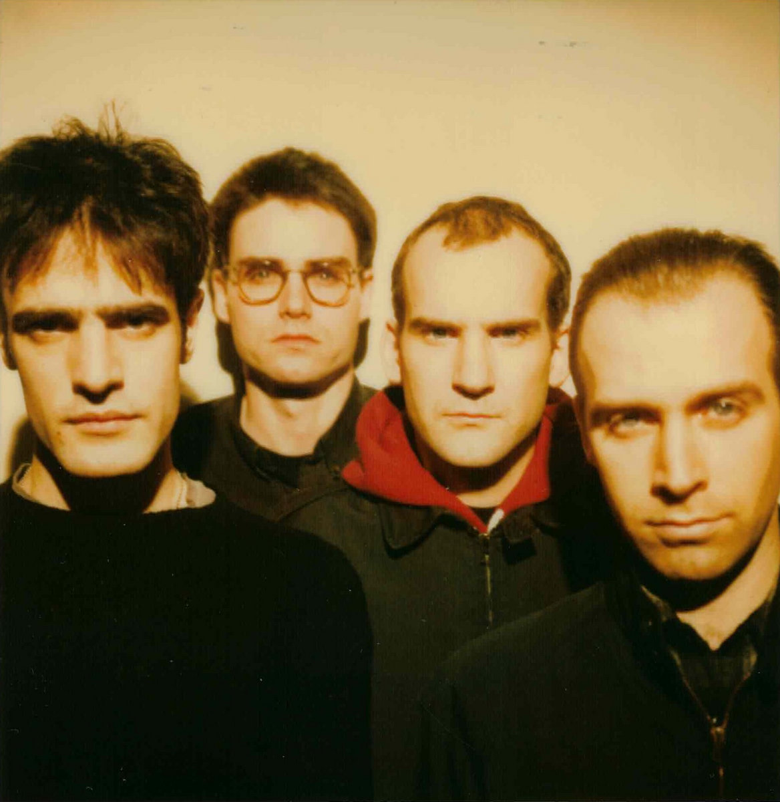
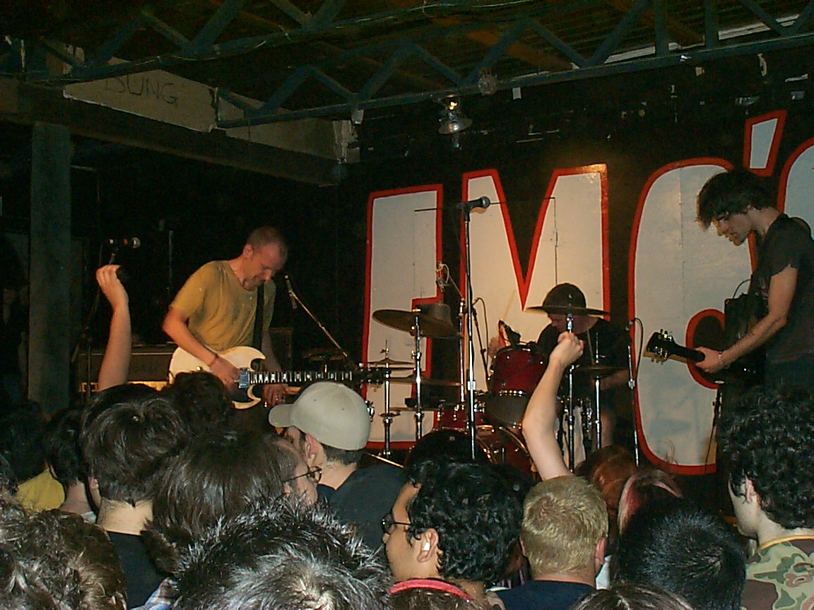

Fugazi
Genres: Post-hardcore, art punk, alternative rock, punk rock, experimental rock
-
Years Active: 1986 - 2003
Label/s: Dischord
Spinoffs: The Evens, Coriky, Deathfix, The Messthetics
Spinoff of: The Teen Idles, Minor Threat, Rites of Spring, EmbraceEgg Hunt, Dag Nasty

Members: Ian MacKaye, Joe Lally, Brendan Canty, Guy Picciotto
Past Members: Colin Sears
-
Fugazi is an American post-hardcore band formed in Washington, D.C., in 1986. The band consists of guitarists and vocalists Ian MacKaye and Guy Picciotto, bassist Joe Lally, and drummer Brendan Canty. They were noted for their style-transcending music, DIY ethical stance, manner of business practice, and contempt for the music industry.
Fugazi performed numerous worldwide tours and produced six studio albums, a film, and a comprehensive live series, gaining the band critical acclaim and success around the world. Highly influential on punk and alternative music, the band has been on an indefinite hiatus since 2003.
Fugazi2026.png )
Albini Sessions (Benefit For Letters Charity)
Fugazi

The Argument
Fugazi

Furniture
Fugazi

Instrument Soundtrack
Fugazi

End Hits
Fugazi

Red Medicine
Fugazi

In on the Kill Taker
Fugazi

Steady Diet of Nothing
Fugazi

Repeater + 3 Songs
Fugazi

Repeater
Fugazi

13 Songs
Fugazi

First Demo
Fugazi

Fugazi
Fugazi

Margin Walker
Fugazi

3 Songs
Fugazi